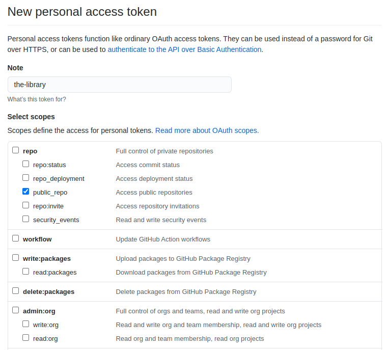
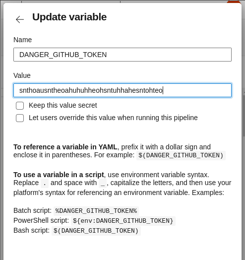

python-library-template
Python library template focused on code quality and security.
Features
Usage
Local repository
First, install dependencies:
$ pip install cruft
Create project:
$ echo $DANGER_GITHUB_API_TOKEN | base64
$ cruft create https://github.com/proofit404/python-library-template
GitHub repository
Create github repository for your project.
Azure Pipelines
Create azure project. Enable pipelines option in azure project.
Review Bot
Create GitHub bot user: https://danger.systems/js/guides/getting_started.html#github
Generate personal access token for that user: https://docs.github.com/en/github/authenticating-to-github/keeping-your-account-and-data-secure/creating-a-personal-access-token
This token should have only public_repo access level.

Add public DANGER_GITHUB_TOKEN variable to the azure pipeline.

Semantic Release
SEMANTIC_RELEASE_PYPI_TOKEN
SEMANTIC_RELEASE_GITHUB_TOKEN